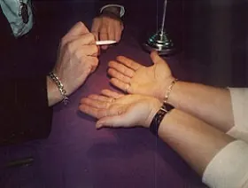

Dit evenement is afgelopen. Bekijk wat er binnenkort te doen is.
Evenement
Paraview Paranormaalbeurs Nijmegen/Wijchen 17 en 18 okt. 2026
- Wanneerzaterdag 17 oktober t/m zondag 18 oktober 2026
- WaarAchterlo Sporthallen
Homberg 2535, 6601 XW Nijmegen/Wijchen Route

Paraview Paranormaalbeurs in Achterlo Sporthallen
Op zaterdag 17 en zondag 18 oktober 2026 zal de Paraview Paranormaalbeurs van bureau View georganiseerd worden. Tijdens deze beurs zijn er talloze standhouders aanwezig die actief zijn op het gebied van new age en alternatieve geneeswijzen.
Het is een beurs voor mensen die vragen hebben met betrekking tot hun relatie, gezondheid, werk, etc. of voor mensen die gewoon interesse hebben in deze materie en ermee willen kennismaken. In een gemoedelijke, ontspannen sfeer kan men bijvoorbeeld een aurafoto laten maken waarop te zien is hoe het karakter en persoonlijkheid is, kan men een consult krijgen waarbij aan de hand van een meegebrachte foto of ring een vraag beantwoord kan worden, kan men zijn gids ontmoeten of new ageproducten kopen. Gewoon rondkijken kan natuurlijk ook. Bovendien worden er in een aparte zaal lezingen over verschillende onderwerpen gegeven.
Opkomst new age en alternatieve geneeswijzen
Bureau View organiseert al sinds 1995 45 Paranormaal beurzen per jaar door heel Nederland. Gedurende deze jaren zijn new age en alternatieve geneeswijzen voor veel mensen steeds meer geïntegreerd in het dagelijkse leven. De gedachte leeft dat het leven meer moet inhouden dan alleen werken, eten en slapen. Er is meer aandacht voor verdieping van het leven en voor ontspanning.
Standhouders
Op de Paranormaal beurs kunnen bezoekers kennismaken met new age en diverse alternatieve geneeswijzen. Bureau View is er in geslaagd om een zo groot mogelijke uiteenzetting van activiteiten in een openbaar gebouw te krijgen, zodat bezoekers een goed beeld krijgen wat er zoal is op alternatief gebied. Zo kunnen er onder andere (één of meer) paragnosten, helderzienden, magnetiseurs, handlijnkundigen, tarotkaartleggers, astrologen, iriscopisten, numerologen, hypnotherapeuten, reïncarnatietherapeuten, klankhealers, auralezers en -tekenaars, auracamera´s, gidszieners en -tekenaars, reikimasters, pendelaars, masseurs aanwezig zijn. Bovendien is het mogelijk om new ageproducten te kopen, zoals beeldjes, wierook, edelstenen, sieraden, muziek en boeken of diverse gezondheidsproducten als olien en voedingsproducten.
Lezingen
Gedurende beide dagen worden er verschillende lezingen met zaaldemonstraties gegeven die gratis bezocht kunnen worden. Hieraan werken bekende paragnosten en andere alternatieve genezers mee. De lezingen gaan bijvoorbeeld over helderziende waarnemingen, numerologie, handlijnkunde, reiki, gidsen en de helende kracht van edelstenen.
Overige informatie
Evenement: Paranormaalbeurs
Datum: zaterdag 17 en zondag 18 oktober 2026
Lokatie: Achterlo Sporthallen, Homberg 2535, .6601 XW Nijmegen/Wijchen
Parkeren: gratis op parkeerterrein
Openingstijden: zaterdag van 12.00 – 17.30 uur. En Zondag van 11.00 – 17.30 uur.
Entreeprijs : 7,50 euro of 6,00 euro met kortingsflyer, 65 6,00 euro kinderen tot 12 jaar onder begeleiding gratis.
Zie kortingsbon op www.paraview.nl voor meer kortingen bij de standhouders.
Voor meer informatie: www.paraview.nl.
Meer evenementen bij Achterlo Sporthallen
Er staan nu geen andere evenementen van Achterlo Sporthallen in de agenda.
Binnenkort in Nijmegen
 UitgelichtSean Taylor24 okt, 20.00 uurDe Brauerij
25okt
UitgelichtSean Taylor24 okt, 20.00 uurDe Brauerij
25okt UitgelichtHighlight Tours in het Vrijheidsmuseum25 okt, 14.00 uurVrijheidsmuseum
25okt
UitgelichtHighlight Tours in het Vrijheidsmuseum25 okt, 14.00 uurVrijheidsmuseum
25okt Uitwisselingsconcert Harmonie Hatert met DOV Wijchen25 okt, 13.00 uur
27okt
Uitwisselingsconcert Harmonie Hatert met DOV Wijchen25 okt, 13.00 uur
27okt Filmvertoning: Het land van mijn ouders27 okt, 19.00 uurHuis van de Nijmeegse Geschiedenis
Filmvertoning: Het land van mijn ouders27 okt, 19.00 uurHuis van de Nijmeegse Geschiedenis